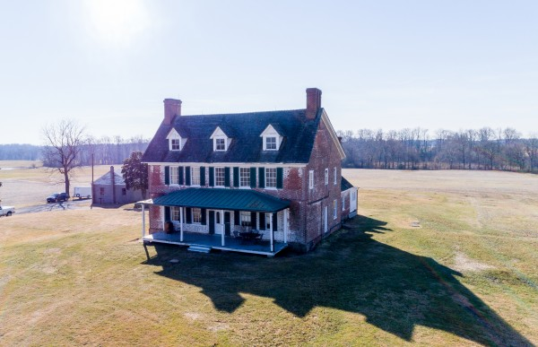
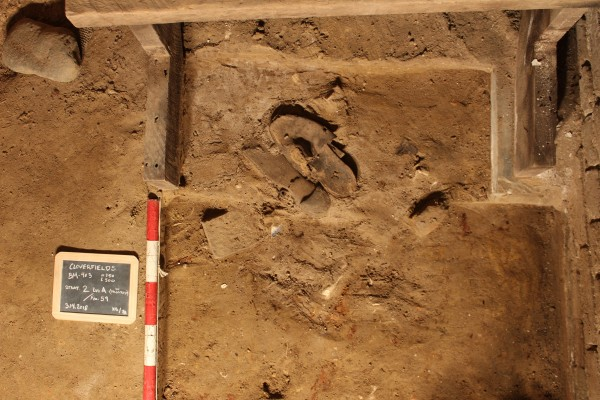
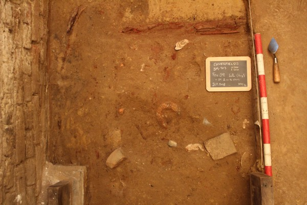

Beginning in early 2018 Applied Archaeology and History Associates, Inc. (AAHA) has been fully immersed in the restoration of Cloverfields, one of Maryland’s oldest standing structures, and home to the prominent 18th-century Hemsley Family for nearly two-hundred years. Located on the eastern shore, in Queen Anne’s County, Cloverfields dates to c.1705 and is owned by the Cloverfields Preservation Foundation (CPF). In 2017, CPF assembled a team of highly qualified professionals to meticulously and conscientiously restore the house and grounds to their c.1784 appearance. Team members include Lynbrook of Annapolis (Restoration and Project Management); Willie Graham (Head Architectural Historian); Devin Kimmel of Kimmel Studio Architects (Lead Architect and Landscape Architect); Sherri Marsh-Johns of Retrospect Architectural Research, LLC (Project Research Historian); and AAHA (Archaeological Consultant).
In the spring of 2018, while documenting the original configuration of the entrance to the Cloverfields’ cellar, AAHA staff made a unique archaeological discovery. Buried in a shallow pit, immediately beneath the bottom cellar stair-tread was a large river cobble capping the intentional concealment of two men’s leather shoes. The same feature contains what appears to be the intentional placement of a single iron horseshoe. An analysis of the shoes determined that they were not a matching pair. Al Saguto, formerly of Colonial Williamsburg, dated the shoes to post 1820-30 based on the form and the wooden pegged soles. The shoes and horseshoe may have been concealed during a major remodeling episode in the1840s.

While 1841Tax records indicate that Cloverfields was possibly occupied by a tenant at that time, it’s also possible that one of the nine enslaved individuals listed in Levy Tax records as occupying the Cloverfields property, could have placed the shoes beneath the stairs. But why conceal a mismatching pair of shoes underneath the cellar stairs?
The intentional concealment of shoes within architectural spaces is not an anomaly. Thousands of shoes have been found hidden throughout houses in England. They have been concealed in fireplaces, stuffed in rafters, and buried under floors. The well-documented practice of shoe concealment in fairly inaccessible locations of houses suggests intentional placement rather than incidental loss. It is easy to misplace a pair of shoes under the couch, but nobody ever lost a pair of shoes in the rafters of a house; or, mistakenly bricked them up behind a fireplace; or, inadvertently put them underneath a large rock, in the cellar, under the stairs.
At least a dozen instances of concealed shoes have been recorded in Maryland. Documented examples include a single woman’s calfskin boot dating from c.1835-1860s in the cornice of the Hammond-Harwood House in Annapolis; 22 men’s and women’s shoes and shoe soles hidden in the attic of the c.1861-1869 Enlisted Men’s Barracks at Fort Washington; and a pile of boots along with a carved, two-headed figurine in the attic of the Captain’s House at Wye House Plantation on the Eastern Shore. But the question remains, why conceal shoes in relatively inaccessible parts of houses?
In England the concealment of shoes within architectural spaces is interpreted as a means of warding off bad luck; of capturing malicious spirits; or, in some instances, as a house offering to bring good luck. This well-documented practice dates from the l5th to the early 20th century. The underlying premise of using concealed shoes as a means of personal or household protection lies both in the shoe’s shape as well as the personal qualities imbued in a shoe by the wearer. In essence, shoes take on the literal shape of the wearer and therefore can act as a form of proxy for the wearer. If a malicious entity is presumed to be haunting you, the concealment of the shoe in a relatively inaccessible space, such as the cellar or the attic, may draw the malicious entity to the shoe instead. And, if luck holds, the malicious entity may become trapped in the shoe.

One particularly relevant account comes from Chestertown, approximately 25 miles north of Cloverfields, in 1896. According to the informant, the burial of old shoes, in particular the soles of old shoes, was done on a Monday to keep the Devil down through the rest of the week.
Similar practices were also documented by folklorists throughout the American south at the turn of the 20th century. One particularly relevant account comes from Chestertown, approximately 25 miles north of Cloverfields, in 1896. According to the informant, the burial of old shoes, in particular the soles of old shoes, was done on a Monday to keep the Devil down through the rest of the week.
It is hoped that the intentionally buried shoes in the Cloverfields cellar brought good luck to the person who buried them in the 1840s. It has certainly brought good luck more than 150 years after the fact. The archaeology at Cloverfields has been the most exciting project the staff at AAHA have ever, or probably will ever, be involved with. The archaeological documentation of more than 300 years of life at this property has produced more than 60,000 artifacts and ecofacts from well documented intact contexts and it is expected that researchers will be combing through them for decades to come.
Matthew Cochran and Jeanne Ward
Applied Archaeology and History Associates, Inc.